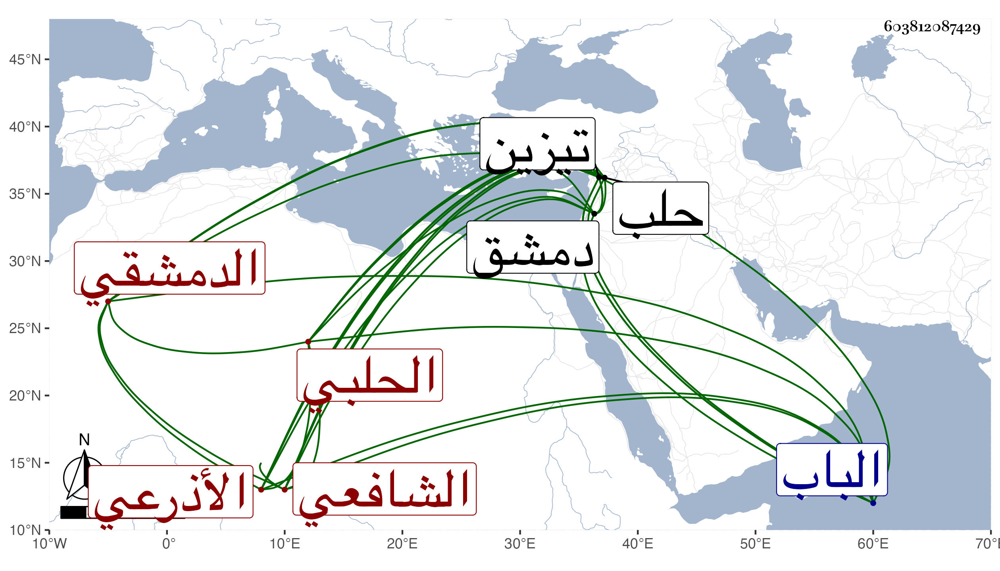

0902Sakhawi.DawLamic.ITO20230111-ara1.EIS1600.603812087429
Biography ID: 603812087429
1144
يوسف بن إبرهيم بن عبد الله الجمال الأذرعي ثم الدمشقي الحلبي الشافعي . قدم من بلاده إلى دمشق فأقام بها مدة واشتغل في الفقه على علمائها ثم قدم حلب وحضر المدارس مع الفقهاء وناب في قضاء تيزين عن الشرف الأنصاري وكان فاضلا في الفقه وفروعه مقتصرا عليها . مات بتيزين في سنة ثلاث . ذكره ابن خطيب الناصرية وكذا شيخنا في إنبائه وقال عنه أنه اشتغل كثيرا في الفقه وغيره وقرره الأنصاري في قضاء الباب ثم تيزين .
